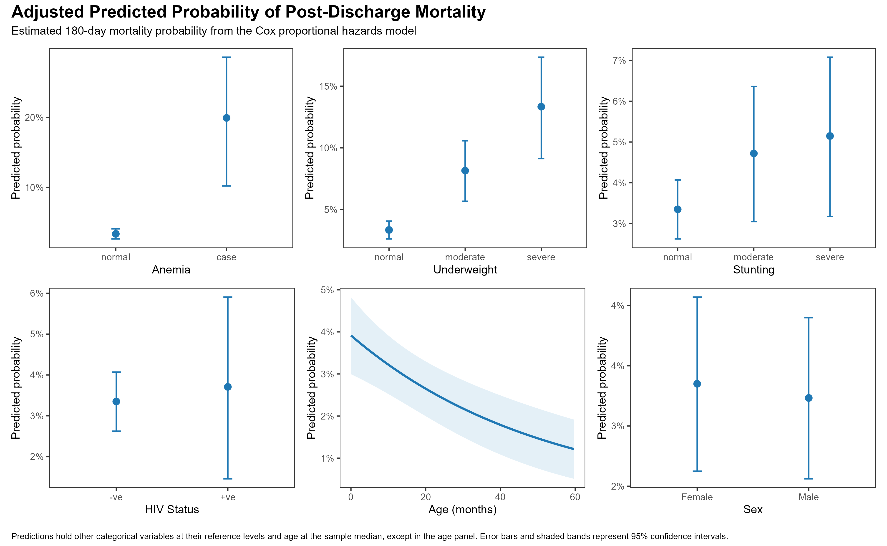
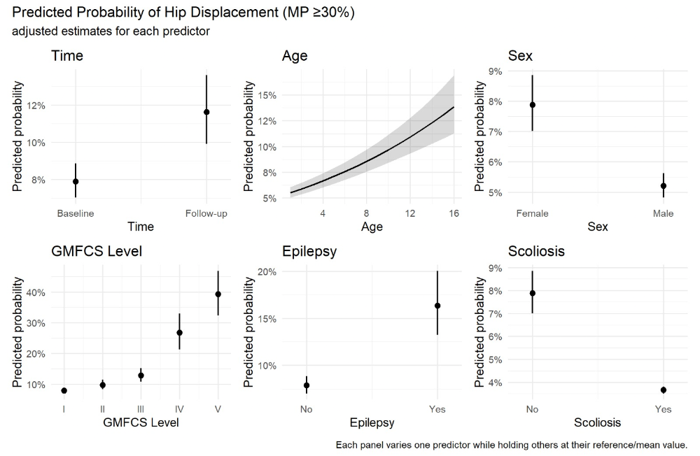

What I focus on
Infectious disease, environmental and occupational health, pediatric outcomes, and community-informed public health research.
Research Epidemiologist | Public Health Data Analyst | Geospatial Specialist
Core stack: R · SAS · SQL · Python · ArcGIS Pro · QGIS · Shiny
I'm Disann Katende, a Research Epidemiologist and University of British Columbia MPH graduate with experience across global and public health research. I use statistical modelling, geospatial analysis, and complex health data to investigate population health patterns and translate evidence into practical public health decisions.
About
I am a Research Epidemiologist and University of British Columbia Master of Public Health graduate with experience across global and public health research, disease surveillance, clinical research, and environmental and occupational epidemiology in Canada and East Africa. I combine rigorous data management with statistical, geospatial, and analytical methods to uncover patterns in complex datasets, identify priority populations, evaluate health outcomes, and translate evidence into practical decisions. My broader experience spans humanitarian response, nutrition, and food security.
Infectious disease, environmental and occupational health, pediatric outcomes, and community-informed public health research.
I link and manage complex datasets, apply statistical and spatial methods, and communicate results through maps, dashboards, reports, and publications.
I translate research findings into evidence that can guide programs, target resources, strengthen policy, and improve population health.
Featured Work
Investigating the spatial distribution and systemic barriers to mass drug administration coverage across 238 clusters in Southern Malawi. The work uses Global Moran's I and statistical models that account for cluster-level and spatial dependence, with dashboards designed to highlight district-level variation.
Supporting targeted interventions and more effective allocation of public health resources. Explore Interactive Dashboard →
Linked national household surveys, cancer registry data, and multiple Canadian Census Health and Environment Cohorts within a secure Statistics Canada cloud computing environment to construct analytical datasets exceeding 100 million records. Developed standardized ICD-coded definitions for eight cancer outcomes and applied Cox proportional hazards, multilevel, and geospatial methods to investigate associations between air pollution exposure and cancer incidence.
Large-scale health data management, spatial analysis, and evidence for policymakers.
Modelled post-discharge outcomes among children under five with sepsis in East Africa, applying survival and geospatial methods to examine clinical, nutritional, demographic, and geographic factors associated with mortality and recovery.

Translating clinical and geographic evidence into more responsive post-discharge follow-up care.
Led a national Canadian study investigating the overrepresentation of young workers and recent immigrants in jobs with multiple hazardous carcinogen exposures. Performed logistic regression modeling on the Statistics Canada Labour Force Survey (LFS) and integrated CAREX Canada data to build an exposures-per-worker metric, revealing key occupational inequities.
Impact: Providing critical geographic and demographic evidence to guide occupational safety policy and target workplace interventions. Read Published Paper →
Analyzed longitudinal clinical surveillance data from Uganda to investigate hip displacement among children with cerebral palsy. Applied mixed-effects logistic regression with participant-level random effects to account for within-person correlation across repeated clinical observations and evaluate demographic and clinical factors associated with hip displacement.
Methods: R · Longitudinal analysis · Mixed-effects logistic regression · Repeated measures · Clinical surveillance

Partners: SNV · PREFA · World Vision · UNICEF/Concern Worldwide
Led and supported nutrition, food security, and public health research across humanitarian and development settings in Uganda. Designed surveys, data collection tools, and analysis plans addressing dietary diversity, maternal and child health, HIV/AIDS, nutrition, and population health needs.
Conducted SMART nutrition surveillance and IPC-aligned food security assessments, including work with South Sudanese refugee populations and vulnerable communities in West Nile and Karamoja. Applied GIS-based surveillance to identify malnutrition hotspots and inform program planning and targeting.
Bringing field epidemiology, nutrition surveillance, and spatial analysis together to inform humanitarian and community health programming.
Methods: SMART surveys · IPC food security assessment · Nutrition surveillance · GIS · Survey design · Monitoring & evaluation · MNCAH/HIV
Skills
Data querying, wrangling, visualization, reproducible analysis, and management of large health datasets.
ArcGIS Pro, QGIS, geocoding, cluster analysis, hotspot analysis, and publication-ready mapping.
GLMs, GEE, Cox proportional hazards, mixed-effects models, ANOVA, and hypothesis testing.
REDCap, Kobo, Voxco, Qualtrics, ODK, EHR standards, validation, privacy, security, and OCAP principles.
Contact
Based in Toronto, I work across epidemiology, geospatial analysis, disease surveillance, statistical modelling, and community-informed research. Get in touch to discuss public health research, analytical collaboration, or evidence-to-policy opportunities.